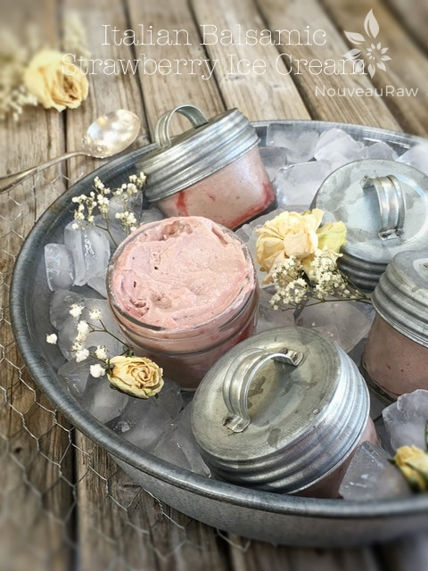
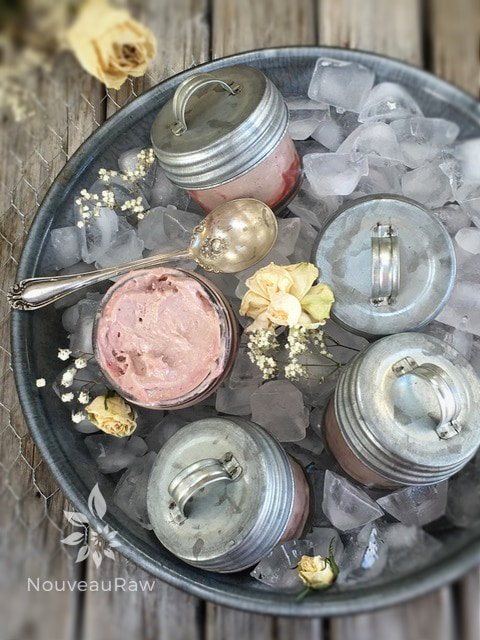

Italian Balsamic and Strawberry Ice Cream

~ raw, vegan, gluten-free ~
The velvety ice cream base meets with the sweet juiciness of fresh strawberries in this luscious frozen summer treat. It is truly nothing short of a taste of summer in perfect culinary form.
I have shared before how much Bob and I enjoy quality balsamic vinegar. We even like it as an apéritif. Sounds fancy and sophisticated, doesn’t it? An apéritif is normally an alcoholic drink taken before a meal to stimulate the appetite, in this case, it is non-alcoholic. We do this only because we love the taste so much that we hate for it get lost in recipes. But, we do have a favorite dish to pair fine balsamic with… strawberries!
For you long-timers who have been receiving my recipes in your inbox for some time now, you will have read my rap on balsamic vinegar. I won’t go into detail about it, but I will share a quick few thoughts for those new to my site.
First of all, it is not a raw product. If you are aiming for 100% raw, you can just omit it and enjoy the luscious strawberry ice cream part. If you do wish to use balsamic, aim for the best quality possible.
The balsamic that I used in this recipe has been aged for 30 years. It is thick, rich, and deep in flavor. I have to give a special thank you to Richard who is a reader of Nouveau Raw and sent me this treasure as a gift. So I am dedicating this recipe to him.
When it comes to freezing the ice cream, there are many different types of containers that you can use. Often times I will use a parchment paper lined bread pan. You can either then use an ice cream scoop to serve it up with, or you can lift it out of the pan, place it on a cutting board, and slice it. Another way that I almost prefer doing is by filling small freezer-safe jars with ice cream. I use the small 4 oz size which is a perfect single serving size for Bob.
There is no need to soften a whole container’s worth of ice cream just to take one serving out. That isn’t good practice anyway because the more times parts of the ice cream melts and then refreezes, the more chance you have of ice crystals forming. With the individual jars, Bob can open the freezer, grab an ice cream and be on his merry way. I hope you enjoy this recipe. Blessings, amie sue
Yields 6 cups batter
Strawberry balsamic swirl:
- 1 1/4 cup organic strawberries
- 2 Tbsp raw agave nectar or maple syrup
- 1 Tbsp rich balsamic vinegar
- 1/2 tsp sunflower lecithin powder or liquid
Ice Cream Base:
- 2 cups cashews, soaked 2+ hours
- 3 cups organic strawberries
- 1 cup water
- 1/4 tsp Himalayan pink salt
- 1/2 cup maple syrup
- 1/4 cup cold-pressed coconut oil, melted
- 1 Tbsp vanilla extract
- 2 Tbsp sunflower lecithin powder or liquid
Preparation:
Strawberry balsamic swirl:
- In the blender combine the strawberries, sweetener, balsamic vinegar, and lecithin. Blend until smooth.
- Place in a squeeze bottle and chill until ready to use.
Ice Cream Base:
- Place the cashews in a glass bowl, along with 4 cups of water.
- Soak for at least 2 hours.
- The soaking process will help reduce phytic acid, which will aid in digestion.
- The soaking also softens the cashews, so they blend nice and creamy.
- After the cashews are through soaking, drain, and rinse.
- In a high-powered blender combine the cashews, strawberries, water, salt, agave, coconut oil, and vanilla. Process till nice and creamy.
- In a high-powered blender combine the; cashews, almond milk, sweetener, lemon juice, vanilla, and salt.
- Due to the volume and the creamy texture that we are going after, it is important to use a high-powered blender. It could be too taxing on a lower-end model.
- Blend until the filling is creamy smooth. You shouldn’t detect any grit. If you do, keep blending.
- This process can take 2-4 minutes, depending on the strength of the blender. Keep your hand cupped around the base of the blender carafe to feel for warmth. If the batter is getting too warm. Stop the machine and let it cool. Then proceed once cooled.
- Add the lecithin and blend until incorporated.
- Chill the mixture for about 1 hour in the fridge and then pour into your ice cream maker and follow the manufacturer’s instructions. Note ~ I like to chill my ice cream mixtures overnight if time permits. This gives the ingredients time to meld together.
- Scoop and even out half of the ice cream batter in the dish that you are going to freeze it in. Make squiggly lines with the strawberry sauce and with the tip of a knife swirl the sauce into the ice cream.
- Add the remaining ice cream and do the same on top.
- You can hold some of the sauce back to top your ice cream off with you if you want.
- It is best to take the ice cream out of the freezer for about 10 minutes ahead of time, so it can have a chance to soften. Did you know that softer ice cream has more flavor than hard, ice cream? Test it for yourself.
- Notes ~ I used the lecithin to help with mouthfeel and texture. You can omit it if you don’t have it. You can also use any other liquid sweetener in place of agave.
Freezing Suggestions for Ice Cream:
-
Use an ice cream machine. Follow the manufactures directions.
-
Freeze in popsicle molds or 3 oz Dixie cups with a popsicle stick inserted.
-
-
Store the ice cream in the very back of the freezer, as far away from the door as possible. Every time you open your freezer door you let in warm air. Keeping ice cream way in the back and storing it beneath other frozen-sold items will help protect it from those steamy incursions.
-
Ice cream is full of fat, and even when frozen, fat has a way of soaking up flavors from the air around it—including those in your freezer. To keep your ice cream from taking on the odors, use a container with a tight-fitting lid. For extra security, place a layer of plastic wrap between your ice cream and the lid.
-
To soften in the refrigerator, transfer ice cream from the freezer to the refrigerator 20-30 minutes before using. Or let it stand at room temperature for 10-15 minutes.
-
Wish to make your own raw ice cream, wonder what machine I might recommend, and more? Click (
here) to check out the Reference Library!

© AmieSue.com